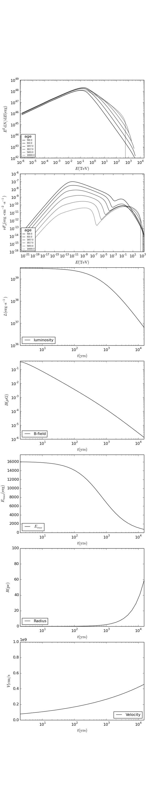

Level 5: The PWN model by Martin et al. 2012¶
Now we have learned everything that is needed for writing a real time-dependent astrophysical source model. In the following, the model by Martin et al. (Martin J., Torres D. F., & Rea N. 2012, MNRAS 427, 415), (Torres, D. F., Cillis, A., Martin, J., & de Ona Wilhelmi, E. 2014, Journal of High Energy Astrophysics, 1, 31).
Again, python-script and parameter file are located in the
docu/tutorial/ directory.
In principle, the whole model-specific physics is in the function that fills
the parameter lookups, and so changing this function is all that has to be changed.
To that end, we replace the GetSpindownStuff function from level 4 by
def CalculateTimeDependentStuff(): t = np.logspace(0,math.log10(1.e6*age),80) gammap = 1.3333 vej = math.sqrt(10.*e0/(3.*mej)) c = math.pow((6./(15.*(gammap-1.)))+289./240.,-0.2); lum = (1.-etab)*lum0*(1.+t/tc)**(-1.*(brind+1.)/(brind-1.)) emax = 3.*eps*gamerapy.el_charge*np.sqrt(etab*lum/((1.-etab)*gamerapy.c_speed)) r = c*(lum0*t*gamerapy.yr_to_sec/e0)**0.2 * vej*t*gamerapy.yr_to_sec v = 1.2*r/(gamerapy.yr_to_sec*t) b = np.sqrt(gamerapy.yr_to_sec*etab*6./r**4 * np.concatenate(([0], ((lum * r)[1:] * np.diff(t)).cumsum()))) lum = np.vstack((t, lum)).T b = np.vstack((t, b)).T emax = np.vstack((t, emax)).T r = np.vstack((t, r)).T v = np.vstack((t, v)).T return lum, b, emax, r, vWarning
Due to calculation speed reasons, the maximum particle energy is currently capped to 10 PeV if you call the grid solver (i.e. in the case of time-dependent energy losses).
- these additional commands have to be used in order to get the Synchtroton-Self-Compton (SSC) component and to set the source radius and extension velocity parameter lookups:
fp.SetRadiusLookup(r) fp.SetVelocityLookup(v) fr.SetSSCTargetPhotons(fp.GetRadius())
Hint
In this example, the SSC target field is not used for calculating the energy losses. To remove this caveat you have to iterate in time and pass the SSC radiation field to the particles object in each step.
The calculation will take a couple of minutes because the B-field strength and maximum electron energies are insane at times earlier than several hundreds of years
Note
If the computation is slow, there are several ways to compromise.
1. Reduce the number of energy bins
- (see tutorial level 4 for an explanation)
2. Use the
SetCriticalMinEnergyForGridSolverParticle class method:
- The grid solver automatically determines the starting time of the iteration
tmin. Particles injected beforetminare treated as being injected as a single blob. This blob of particles will slide down in energy over time and end up at some energyEaftert=age. Now, the grid solver automatically chosestminas the starting time so that the blob ends up at a desired energyEdaftert=age. The default isEd=1.e-3 erg, but you can set a manual value likefp.SetCriticalMinEnergyForGridSolver(1.e-2)which would setEd=1.e-2 erg. As a result,tminbecomes larger, and in systems where the B-field decreases with time, your electron energy losses at the beginning of the evolution are smaller which in turn increases the computational speed (see tutorial level 4). The same effect is achievable by setting a high value of Emin, e.g.fp.SetEmin(1.e-2). Choose this options when you can live with this bump - this is typically true when you are only interested in VHE emission and even a high bump in electrons doesn’t matter as you are looking at the emission from TeV particles.3. Decrease the number in your lookups to a minimum
- This makes the binary search in the lookups faster!
4. Appoximate with constant losses
- If the time-changes in the loss-governing parameters (i.e. B-field, ambient density, source radius and extension speed) are slow, you could approximate with a model where these values are static. In other words, approximate with something like the model you got to know in level 3.
Et voila:
{kind=link}